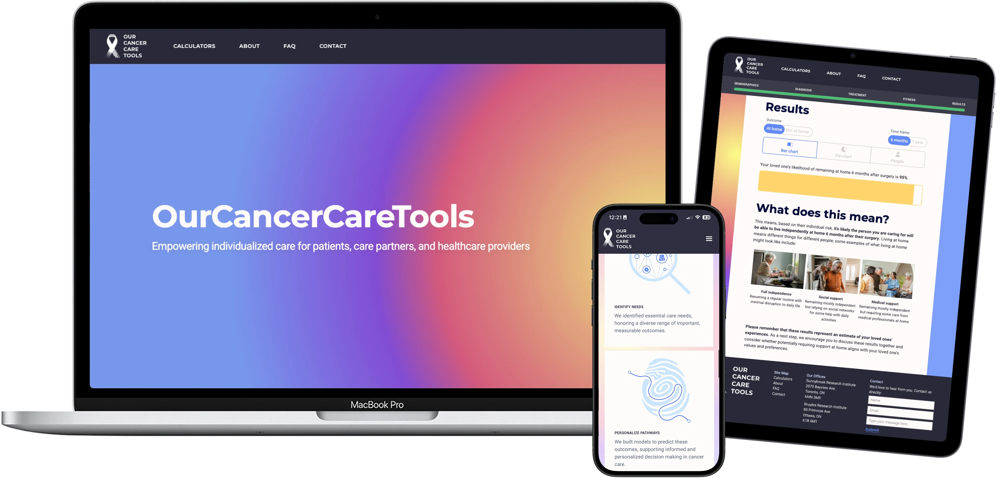
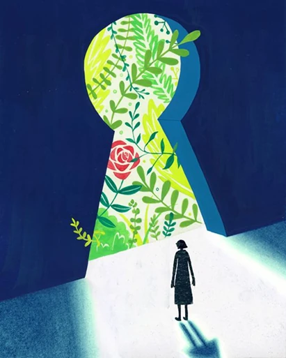
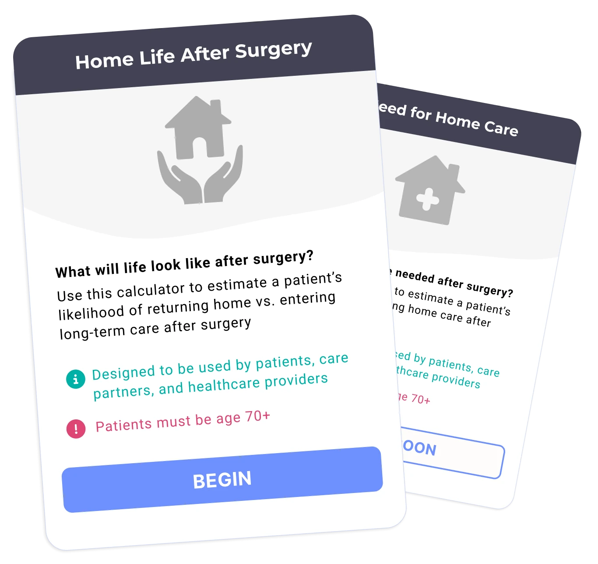
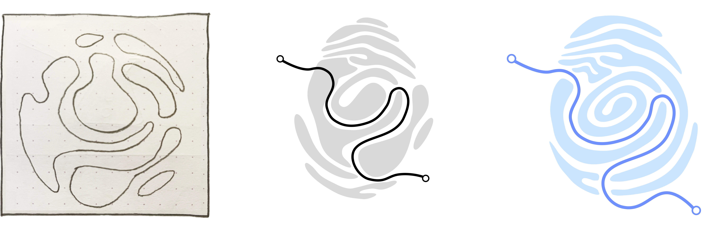
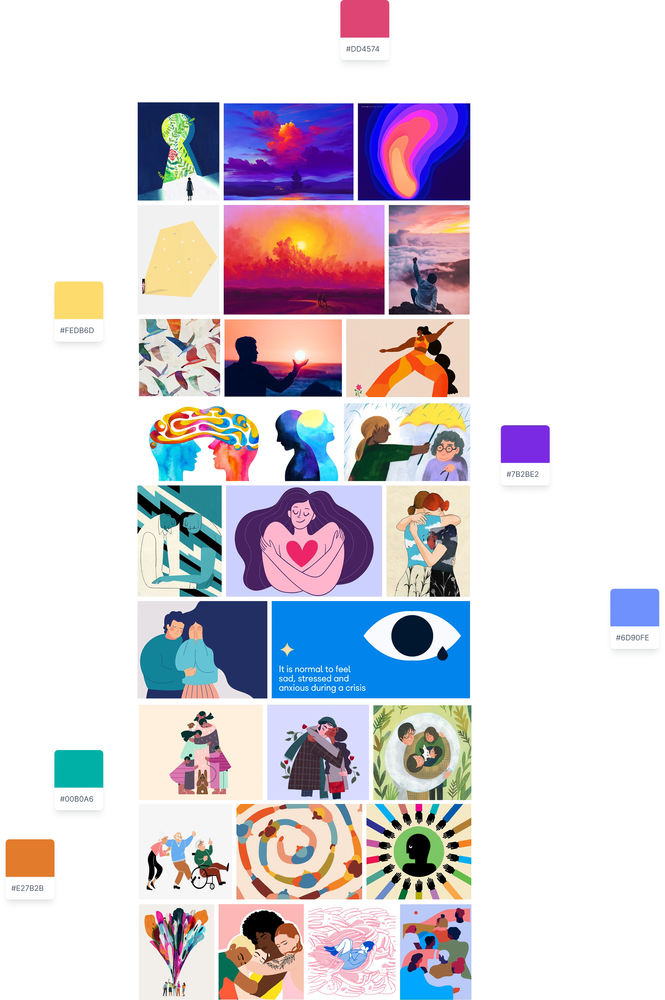
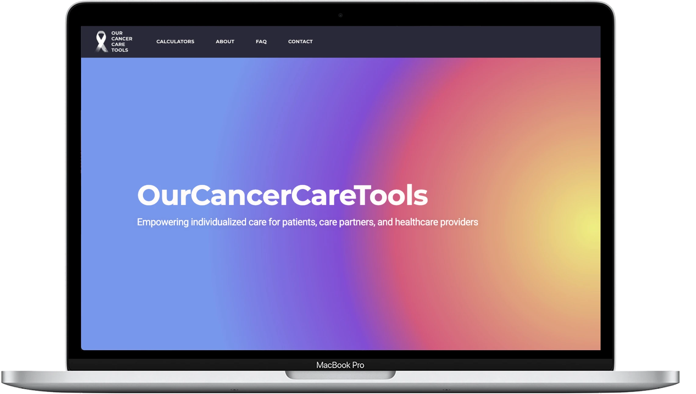
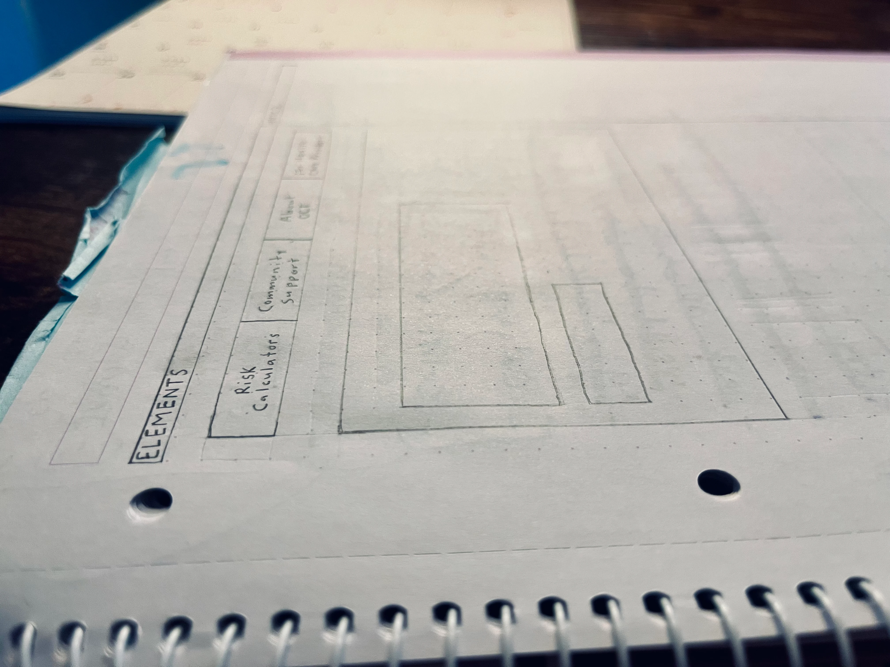
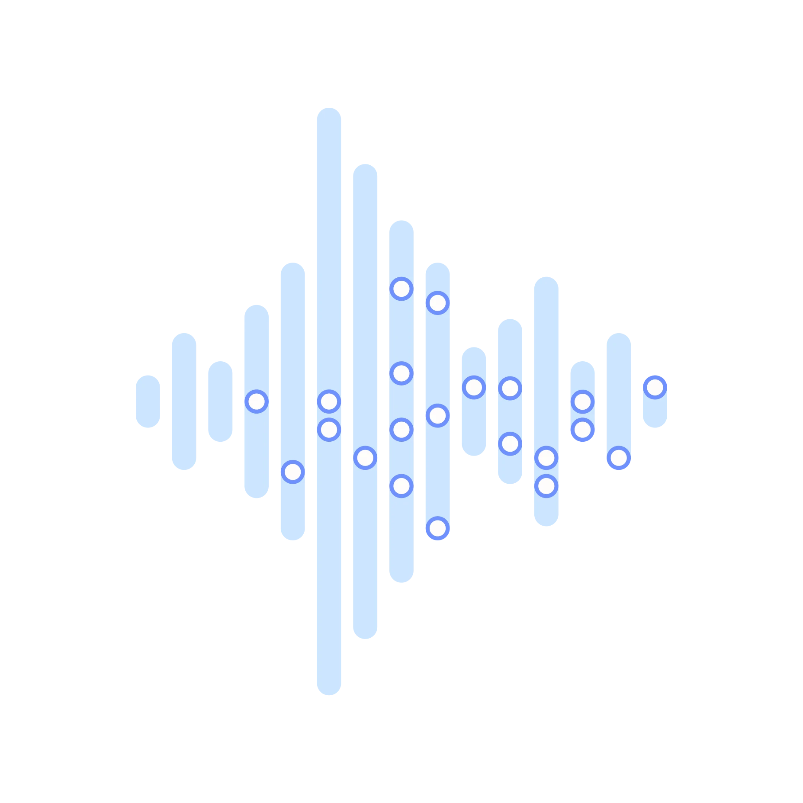
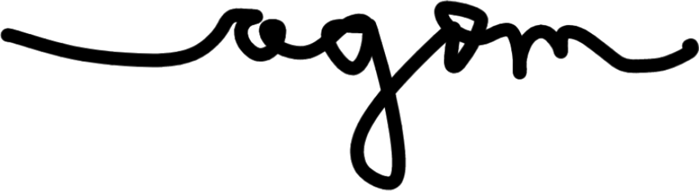

After a cancer diagnosis, people don’t just question whether they’ll live—they question whether their life will still feel like their own. Will they be able to live independently after surgery? Will they recognize themselves after chemo?
OurCancerCareTools answers questions that clinical conversations too often skip, using predictive algorithms to calculate treatment risks so patients can pursue care pathways aligned with their values.

With a team of oncologists, researchers, and data analysts at Sunnybrook Research Institute, I designed and built a website with risk calculators to empower personalized cancer care.
The challenge was threefold:

I led design and front-end development end-to-end—from visual concept to a coded, responsive build in Webflow—including integrating the predictive algorithm logic developed by the data team.
Key constraints included designing for users in acute emotional distress, meeting accessibility requirements across mobile, tablet, and desktop, and navigating decisions collaboratively with clinical and research stakeholders.

We built empathy maps for each user type, then tested assumptions through a feedback booth at Sunnybrook's cancer centre. We conducted competitive audits of existing tools and ran focus groups with 30+ prospective users.
Three insights fundamentally shaped the design direction:
Emotional safety is a prerequisite for engagement. Feedback on early moodboards revealed that tonal missteps could trigger feelings of unsafety before a user even reached the calculator. We infused every aspect of the design with compassion and togetherness.
Care partners are as affected as patients—sometimes more. An instinct to centre the tool on the patient experience was overridden by overwhelming evidence that care partners are equally high-stakes users, carrying enormous emotional and logistical burden. Designing for them required equal consideration.
Information overwhelm fuels avoidance. People impacted by cancer consistently described drowning in paperwork, conflicting guidance, and dense clinical language. In overwhelming moments, a complex tool risks being abandoned entirely.

Embedding warmth as infrastructure
A sunrise-sunset gradient evokes continuous renewal, curved edges soften navigation, curated images depict togetherness and human-centered care. The design deliberately helps users feel safe enough to engage.
Building three distinct journeys
Branching logic adapts the experience to whoever is accessing the tool, ensuring users can answer questions accurately regardless of medical literacy and feel seen regardless of their role.
Leaving room to breathe
Calculator questions surface one at a time, and are organized into labelled sections on a progress indicator. A slow pace keeps users present instead of panicking while clearly communicating what's ahead.
Launched in January 2025, OurCancerCareTools is a live, publicly accessible platform currently used in clinical settings to support real treatment conversations between patients and their care teams.
Formal beta testing is underway to inform the platform's next iteration, and additional calculators are in development.

The first prototype was built with a much broader scope, driven by ambition to give users everything they might need. For example, it included features such as a buddy system, chat forums, and a map to nearby support.
In retrospect, earlier and tighter alignment with clinical stakeholders around feasibility would have shortened the time between that initial vision and the focused, buildable product we landed on.

This project allowed me to work to my strengths. I care deeply about amplifying the voices of vulnerable people, and much of my life in and out of design revolves around bringing comfort to others during challenging times.
What made this particularly demanding—and rewarding—was the complex empathy required to design for three types of people each carrying different weights: patients facing their own mortality, care partners shouldering invisible burdens, and clinicians navigating difficult conversations daily.
It's exactly the work I want to keep doing.

If you're interested in collaborating, please contact me at annagombay1@gmail.com
Be well!
